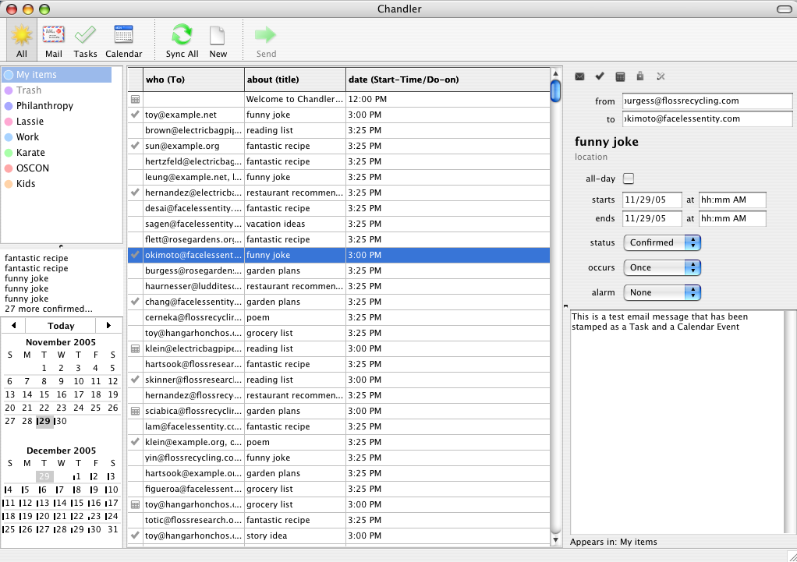

Chandler manages data we're all accustomed to using every day -- email, contacts, tasks, notes -- and unifies and organizes it all in a unique way. Chandler works for common data types out of the box, and it's easy to extend Chandler to work with custom data.

In Chandler a user's data is made up of Items and collections of Items, which we call Item Collections. An Item could be a calendar event, email message, task, note, photo, etc. An Item Collection is a heterogenous group of these Items. The center table in the screenshot above demonstrates a collection of arbitrary Items. This reflects one of our design goals for Chandler -- instead of trapping data in individual application "silos" (email in an mail reader, calendar events in a calendar application) Chandler provides a flexible, unified domain where all the data can live.
Out of the box, Chandler will support types commonly found in a Personal Information Manager: email, contacts, calendar events, tasks, and notes. Chandler's data handling is designed to make it easy for users to plug in their own data types and behaviors -- as simple as adding attributes to an existing Item type or as complex as defining a new Item type, with its own schema, data handling code, and UI code.
Our example extension for Chandler, Feeds, extends Chandler to deal with RSS or Atom feed data (in the rest of this paper we'll use RSS to mean RSS or Atom data or feeds). Eventually we want to enable end users to extend and customize Chandler with minimal to no programming.
To get a feel for Chandler's design and see how customization works, we'll walk though the major steps that make up the Feeds example. For a more detailed walkthrough of the same extension, see the tutorial at http://wiki.osafoundation.org/bin/view/Documentation/ZaoBaoTutorial.
Basics of the Chandler UI
First, lets cover some of the basic elements of Chandler's user interface:
At first glance, our three pane view looks pretty familiar. The Sidebar contains a set of Item Collections, and one of them is selected. The Summary View displays the Items from the Item Collection, and one Item is selected. The Detail View displays the selected Item.
Feeds is going to extend Chandler to add RSS Items to our mix of Items. To integrate RSS data, we need to...
Extend Chandler's schema by defining two new kinds of Items: one for an RSS channel (or feed), and one for the individual RSS news Items.
Create a background task that will periodically retreive RSS Items for the RSS channels in our repository.
Connect the RSS channels and Items to the user interface.
Add a menu handler to add collections of RSS Items to the Sidebar.
Extend schema for RSS Items to display properly in the Summary View.
Define a UI element for RSS Items to display properly in the *Detail View.
1. Adding RSS Item and RSS Channel: Extending Chandler's Schema
Before we start extending Chandler's schema, we'll introduce you briefly to Chandler's Repository. Chandler's Repository is a single database that stores all information about all data used in Chandler. An Item is the simplest kind of object that can be stored in the Repository. Once Items are created in the Repository, they will persist across all invocations of Chandler until they are explicitly deleted. The Schema API tries to make working with Items look like working with regular Python objects.
An Item is really just a bunch of Attribute values. For example, a calendar event Item would have attributes such as startTime, endTime, etc. Every Item has a Kind that determines what Attributes that Item can have. Calendar event Items would have a Kind of CalendarEvent, which would list the Attribute definitions for startTime, endTime, etc.
In the examples that follow, you'll see names like schema.Text. These names are taken from the module for the schema API, which is in the module application.schema, which has been imported as schema. For Feeds, let's define a Kind for an RSS channel:
The Schema API uses Python to describe Kinds. It does this by making
a correspondence between Python classes and Kinds. Our FeedChannel
Kind is derived from the ListCollection kind, which is defined in the
pim module (which is as short name for osaf.pim.
The schema.kindInfo function is used to set the values of attributes on the
Kind isself. The attributes of the Kind are defined as attributes of the Python class,
and use subclasses of schema.Role such as schema.One to define the
type of relationship for each attribute (One to One, One to Many, and
so forth). The FeedChannel inherits a contents attribute from
ListCollection, which is the container for the various
items in the RSS feed.
Now let's define a Kind for Items in an RSS feed, representing a single news Item in a Feed channel.
As you can see, FeedItem contains four attributes: channel, author, date, and content. The attribute channel refers back to the original FeedChannel, and content is a Lob - or Large Object. We'll be storing potentially large chunks of HTML in this attribute so we'll use Lob rather than Text.Why? Lob vs Text
Behind the scenes: Repository
Everything in the Repository is an Item, including Kinds themselves.
You may have noticed that our Feed Item has a SuperKind called ListCollection. This reflects an inheritance hierarchy: ListCollection is another Kind representing an explictly maintained list of Items. ListCollection is itself derived from a Kind name ContentItem which should be used as the starting SuperKind for all Kinds representing user data.
Adding behavior with Python
This data definition is useful, but we probably want to define some behavior for FeedChannels and FeedItems. We can define methods and implement them using Python. For example, we might want to be able to call a method, Update() on an FeedChannel Item which updates the feed's info from the server. All we need to do is define that method in the FeedChannel class.
class FeedChannel(pim.ListCollection):
...
def Update(self, data):
# fill in the item
...
2. Periodically getting new RSS Items: PeriodicTask
Most RSS Aggregators will periodically poll the source of the feed in order to download new Items. We'd like Feeds to do the same thing. Chandler provides an Kind called a PeriodicTask which is used to implement this type of functionality.
First, we'll use Python to create new items in the repository.
The schema.ns function gives you a namespace which allows to refer
to both the Kinds (classes) and Items (instances) defined in a Parcel (module).
In this example we are getting the namespace for the osaf.startup Parcel.
We use the the update method of the
schema.Item class to create a new
PeriodicTask item, and to set the values of its
attributes. This new PeriodicTask whill be invoked at
startup and every 30 minutes thereafter. The actual periodic behavior
is described by feeds.FeedUpdateTaskClass.
The startup parcel automatically finds all Items of Kind
PeriodicTask and runs them according to the specified frequency.
class FeedUpdateTaskClass:
def __init__(self, item):
self.view = item.itsView.repository.createView("Feeds")
def run(self):
self.view.refresh()
for channel in FeedChannel.iterItems(self.view):
try:
channel.Update()
except socket.timeout:
logger.exception('socket timed out')
pass
except:
logger.exception('failed to update %s' % channel.url)
pass
try:
self.view.commit()
except Exception, e:
logger.exception('failed to commit')
pass
return True # run it again next time
The Feeds PeriodicTask retreives new RSS data every 30 minutes.
Behind the scenes: Threading
wxWidgets, like all GUI frameworks, needs to run in a single thread. We're currently using the Twisted Reactor to schedule work that needs to happen outside that thread. The Reactor runs in a separate thread, and is used to schedule the PeriodicTasks found in the Repository.
A thread in the Repository has its own Repository View, which is an independent connection to the Repository. Each PeriodicTask has its own Repository View, as does the main wxWidgets UI thread. Different tasks and threads communicate with each other through the repository. After Feeds's PeriodicTask creates new Items in its Repository View, it calls commit() on the Repository View, which pushes the Items to the Repository. The UI thread calls refresh() on its Repository View during its OnIdle cycle, picking up the new changes.
3. Connecting the data to the user interface
Our next step is to get RSS Items to show up in Chandler's interface. We'll add a menu handler to add collections of RSS Items to the Sidebar, modify the schema so the Summary View can display RSS Items, and extend the Detail View to display RSS Item attributes.
Creating a Menu Handler
Let's start by adding a new menu item for creating a Collection of RSS Items from an RSS feed. A menu is an Item of Kind MenuItem, so we'll define just like all the other Items we've seen so far.
The MenuItem is attached to the CollectionMenu, which is the menu you see when you select the Collection item in the menu bar. When you select the menu item, it will fire the NewFeedsChannelEvent, which we'll define next. As with menu items, events are also Items.
When a NewFeedsChannelEvent is fired, it will be sent to the onNewFeedsChannelEvent method of Feeds' controller, FeedController.
class FeedController(Block.Block):
def onNewFeedChannelEvent(self, event):
import wx
url = application.dialogs.Util.promptUser(wx.GetApp().mainFrame,
_(u"New Channel"), _(u"Enter a URL for the RSS Channel"), "http://")
if url and url != "":
try:
# create the feed channel
channel = channels.NewChannelFromURL(view=self.itsView, url=url,
update=True)
schema.ns("osaf.app", self).sidebarCollection.add (channel)
return [channel]
except:
application.dialogs.Util.ok(wx.GetApp().mainFrame,
_(u"New Channel Error"),
_(u"Could not create channel for %(url)s\nCheck the URL and try again.") % {'url': url})
raise
The onNewFeedsChannelEvent handler takes care of putting up a dialog and prompting the user for the URL of the RSS feed.
Then the controller calls NewChannelFromURL to create an RSSChannel object and populate it with data from the RSS feed.using the feedparser. Next, the list of RSSItems is added to the Sidebar. channel is a ListCollection that contains the RSSItem objects. This collection is managed by the RSSChannel : Items will be added each time the RSS feed is updated. We add this Collection to the Sidebar by posting an event to the view. This ItemCollection will appear as a single entry in the Sidebar.
def NewChannelFromURL(view, url, update = True):
data = feedparser.parse(url)
if data['channel'] == {} or data.get('status', None) == 404:
return None
channel = FeedChannel(view=view)
channel.url = channel.getAttributeAspect('url', 'type').makeValue(url)
if update:
try:
channel.Update(data)
except:
channel.delete()
raise
return channel
Behind the scenes: CPIA (Chandler Presentation Interaction Architecture)
The high-level UI elements in Chandler (like the Sidebar, the Detail View, the Summary View, Menus, the Toolbar and Status Bar) are also Items, and they are stored in the repository just like any other Kind of Item. UI element kinds are derived from the 'Block' Kind, and so we call them "Blocks". Blocks represent the "View/Controller" in our variant of a Model-View-Controller architecture. Collections of ContentModel Items (RSS Items, calendar events, mail messages, etc.) make up the "Model". Each Block has a "contents" Attribute, connecting it to its Model. In the case of the Summary View, its "contents" is the ItemCollection selected in the Side Bar. In the case of the Detail View, its "contents" is the currently selected Item in the Summary View. The actual GUI implementation of the Block is handled by a wxWidgets peer.
Displaying Items in Summary View
When the user clicks on a collection in the Sidebar, the Summary View automatically displays the Items in that collection. In RSSChannel collections the Items are RSSItems.
By default, the Summary View displays the who, about, and date attributes in its columns.
As we have defined it, the RSSItem does not define all of these attributes. This is normal as these are very generic attributes. Typically a Kind will define a series of "redirect" attributes with these names. These "redirect" attributes are like virtual attributes that actually refer to values in other attributes. Typically, about refers to the title of an Item, who refers to an author or creator of an Item, and date refers to some relevant date stored in the Item such as the due date or the start date.
In the case of RSSItem, about should redirect to the title of the article, and who should redirect to the author.
We will add these "redirect" attributes to our original definition for the Kind:
about = schema.Role(redirectTo="displayName")
who = schema.Role(redirectTo="author")
body = schema.Role(redirectTo="content")
This is all the code that is required to display Items in the Summary view. Chandler will take care of all the rest.
Behind the scenes: ItemCollections
Under the hood, ItemCollections are implemented as data structures which send notifications. Some of these data structures are virtual and represent operations on sets of items. These virtual collections can be composed to create queries over the contents of the repository. All collections support the ability to notify interested parties of changes to their contents,
Displaying an Item's Detail View
When the user clicks on an Item in the Summary View, the Detail View will display details about that particular Item. Like the Summary View, the Detail View knows about certain attributes and can display them automatically. Unlike the Summary View, each Kind can display a different set of attributes in the Detail View, in its own unique way.
A Kind can define the user interface for the Detail View by providing a "Trunk Subtree" which defines a list of user interface elements to display:
Each rootBlocks attribute refers to a widget or fragment of user interface which will be displayed in the Detail View. Chandler will ensure that these user interface fragments will display and edit the correct data in a consistent way.
Loading the Items into Chandler: Parcels
We have now defined schema Kind Items, defined a PeriodicTask Item for a background task, defined a Menu Block and associated Event to add new behavior, and defined a DetailTrunkSubtree Item to customize the UI. We've also associated Python code with several of these Items. We add these enhancements to Chandler by defining a Parcel. A Parcel defines Items to be loaded into the repository. Once those Items are in the repository, they are discovered by queries against the repository, or they are discovered because they are linked to other well known Items in the repository.
Chandler uses parcels to define much of the UI framework, and all of the PIM functionality.
Parcels are defined in Python modules which contain Kind (Python
class) Item (Python instance) definitions. Chandler scans for modules at startup, and loads each Parcel directly into the repository. While Chandler is running it finds the various data definitions in the repository and activates them when appropriate. This happens in a module level hook function called installParcel. The Python code that we've presented for creating Item instances would appear in the body of the installParcel method for that Parcel.
This is one of the primary patterns that drives Chandler: the repository controls all data in Chandler, and Chandler uses it to discover new application schemas and data. Behavior is determined by code that is attached to this data.
Behind the scenes: The Python code for Kinds and Items is merely a bootstrapping mechanism to get data loaded into the Repository. The Repository is the primary data store that Chandler uses to keep all user data, schemas, and more. If data that is declared in your Parcel is changed within the Repository, those changes will not be serialized back the Python code in your Parcel..
Where Chandler is today
In this paper, you have seen how to:
Define new data types
Populate the repository with new data
Display that data in the Sidebar, Summary View, and Detail View
The next step is to spend some time developing your own data types and application behavior. The steps described here will get you some basic functionality out of your data but Chandler's true potential comes to light when you begin to explore some of its more advanced capabilities. When Items have been properly defined, many of these capabilities "just work" for your new Kind.
Sharing
Chandler has a built-in infrastructure for sharing individual Items or entire ItemCollections through WebDAV. The most immediate and obvious use for this is the capability to share Calendar data. Users can share their data with others and allow them make changes, allowing collaboration using open standards. By creating your parcel's data as Chandler Items, your data will also be able to take advantage of Chandler's sharing capabilities.
Stamping and dynamic types
Chandler leverages Python's unique typing to allow Items to take on attributes and behavior of multiple Items at runtime. For example, you could turn an RSS news Item as created above into a mail message to send the news with your collegues. Or you can put a mail message on your calendar by just "stamping" it as an event. As with Sharing, your parcel's Kinds and Items can also be stamped and (will) be usable as stamps.
What to do next
There is a more detailed tutorial on the workings of the Feeds parcel that will explain more of the details of writing a parcel.
You can visit the Chandler home page for ideas on how to get involved with the Chandler project.
Please send comments or corrections on this document to the Chandler development mailing list. If you need more help, the mailing list is the best place to go.
 At first glance, our three pane view looks pretty familiar. The Sidebar contains a set of Item Collections, and one of them is selected. The Summary View displays the Items from the Item Collection, and one Item is selected. The Detail View displays the selected Item.
Feeds is going to extend Chandler to add RSS Items to our mix of Items. To integrate RSS data, we need to...
At first glance, our three pane view looks pretty familiar. The Sidebar contains a set of Item Collections, and one of them is selected. The Summary View displays the Items from the Item Collection, and one Item is selected. The Detail View displays the selected Item.
Feeds is going to extend Chandler to add RSS Items to our mix of Items. To integrate RSS data, we need to...
 A thread in the Repository has its own Repository View, which is an independent connection to the Repository. Each PeriodicTask has its own Repository View, as does the main wxWidgets UI thread. Different tasks and threads communicate with each other through the repository. After Feeds's PeriodicTask creates new Items in its Repository View, it calls commit() on the Repository View, which pushes the Items to the Repository. The UI thread calls refresh() on its Repository View during its OnIdle cycle, picking up the new changes.
A thread in the Repository has its own Repository View, which is an independent connection to the Repository. Each PeriodicTask has its own Repository View, as does the main wxWidgets UI thread. Different tasks and threads communicate with each other through the repository. After Feeds's PeriodicTask creates new Items in its Repository View, it calls commit() on the Repository View, which pushes the Items to the Repository. The UI thread calls refresh() on its Repository View during its OnIdle cycle, picking up the new changes.